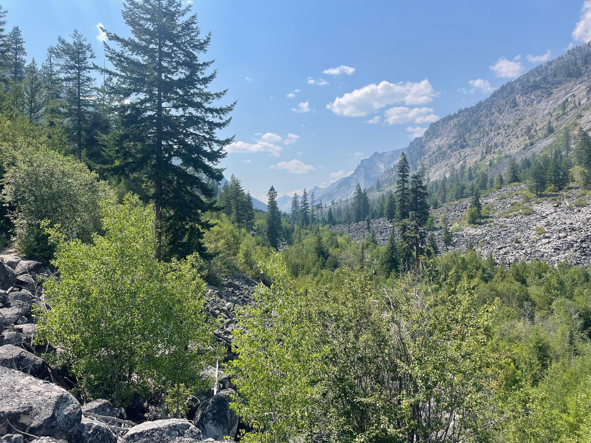
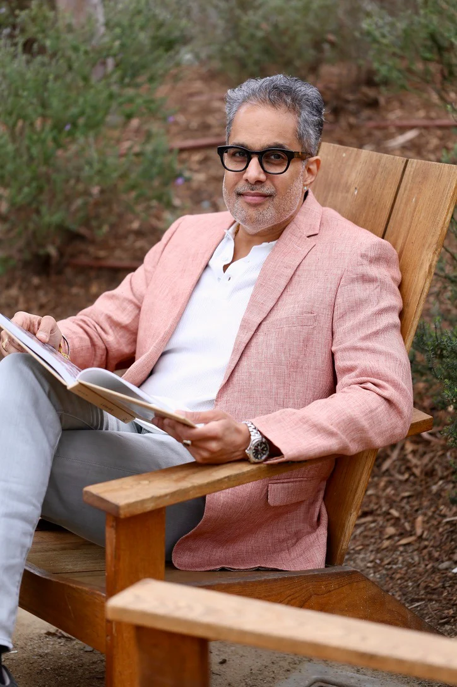

My Story

I spent twenty years moving money, managing risk, and climbing ladders. CFO. SVP. Global operations. I was very good at it. And I was quietly falling apart.
What I discovered — through Vipassana, through breathwork, through long days alone in wild places — is that the very qualities that made me successful in finance were also the ones keeping me from myself. Discipline without softness. Achievement without presence. Performance without feeling.
Today I lead retreats for leaders who recognize that feeling. People who have built a lot — and sense that something still needs building.
Twenty years. High performance. The corridors of Dun & Bradstreet, OppenheimerFunds, Flextrade. A CFO leading global operations across billions in revenue. Every external marker of success — and underneath it, the quiet weight of imbalance. Stress wearing the mask of ambition. Disconnection dressed as discipline.
I was excellent at managing numbers. I was less excellent at managing myself. The gap between who I appeared to be and how I actually felt kept widening — until I couldn't ignore it anymore.
A 10-day Vipassana retreat. Then another. Kundalini yoga at dawn. Breathwork in the dark. Slowly, the noise quieted and something older and wiser began to speak. Meditation wasn't an escape from life — it was a return to it.
Nature became the greatest teacher I had ever had. In the mountains, the performance stopped. There was nothing to manage, nothing to optimize. Just presence — raw and complete. I began to understand that the nervous system dysregulation I had been living with wasn't a character flaw. It was a signal I had never learned to read.
I studied Internal Family Systems, somatic practices, and ancient healing modalities. Each one pointed to the same truth: we are not broken. We are parts of a whole that got separated. And the Self — our core, undamaged Self — always knows how to heal.
Now I guide leaders through the same threshold I once crossed. Not away from their ambition — but into a deeper, more sustainable version of it. One rooted in emotional presence, nervous system health, and the kind of inner clarity that makes everything else possible.
Through RujhaLife, I create immersive experiences in wild places — Montana, primarily — where the land itself becomes part of the medicine. I work with executives, founders, and builders who are ready to stop managing their inner life and start living it.
I also bring this work into organizations as a conscious leadership advisor — helping companies build cultures of emotional intelligence, psychological safety, and genuine human connection.
CFO at AudioEye · SVP at Flextrade · Dun & Bradstreet · OppenheimerFunds · Founder, CERESLabs & RujhaLife
Vipassana · Kundalini Yoga · Breathwork · Internal Family Systems (IFS) · Somatic Practices · Nature Therapy
B.S. Finance & Marketing, NYU Stern · MBA, SUNY Buffalo · M.S. International Business, Devi Ahilya University
Global Wellness Institute Ambassador · SEED Healthcare Venture Capital · Health & Wellness Advisor & Investor
The Montana retreat is the best place to start. An immersive few days in wild country — with space to slow down, open up, and find out what's been waiting.